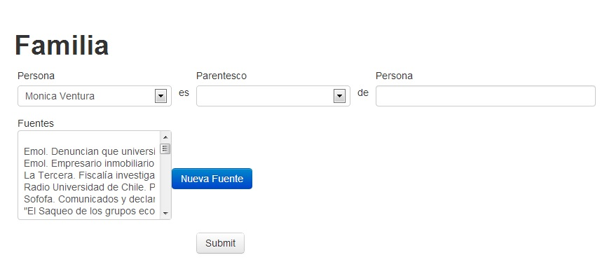
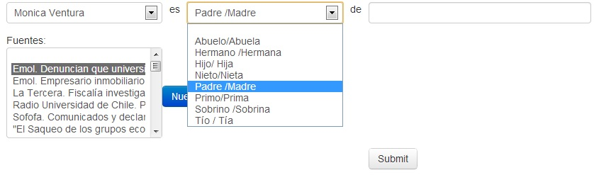
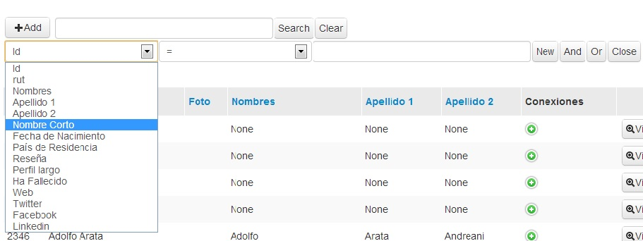

After saving the Entity Form that we created a grid will display (Fig. 13) with the details that we entered. However, we still have to add the Connections.
(Fig.13)
2. - To add the Connections you must click the Add button (Fig. 14) first
(Fig. 14)

3. - The other connections will display (Fig. 15)
(Fig. 15)

4. - To add a new connection you must click on the “Add Connection” link (Fig. 16). As an example we will enter a family connection.
(Fig. 16)

5. - The Connection form will display (Fig. 17). For default will already have entered the Person Entity, the Relationship (the connection) and the other Person with whom you want to link your already created Entity. Besides the source(s) of your connection.
(Fig. 17)

6. - Select connection. For our example we will select Father/Mother (Fig. 18)
(Fig. 18)

7. - Now you must enter the connection with another person (Fig. 19).
If the Person entered already exists in the database, you must NOT add it again, the system will alert you about it and you only have to select it. If not, you can create a new person Entity just entering his SHORT NAME. DOING SO WILL CREATE A NEW PERSON ENTITY.
(Fig. 19)

8.
- Add
the source for the connection (Fig.
20). Press the button 
Use of the source tool
To
use the source tool, simply click on the  button to see a list of available sources. There, you can check any
sources you want to include, and search for sources in the search
box.
button to see a list of available sources. There, you can check any
sources you want to include, and search for sources in the search
box.
(Fig. 20)
.
8.1. - The Source Form will open. (Fig. 21). The following fields must be completed:
DESCRIPTION (Title of the source), URL (Web address of your source), DATE (DD/MM/YYYY). After completing the data, save them with the button 
(Fig. 21)

9.
- Save the connection with the button 
10. When saving, the system will alert the new connection. In our example, it will say “Father Inside”. (Fig.24)
(Fig.24)

11.
- To add a new connection, use the button  (Fig.25)
(Fig.25)
(Fig.25)

12. - You will return to the Entity Grid (Fig.26) to continue adding Connections.
(Fig.26)

13.
To enter a new connection. Click on the button  (Fig.
27) connections will be displayed to
continue adding all the connections you need.
(Fig.
27) connections will be displayed to
continue adding all the connections you need.
(Fig.27)
14. Other connections will be displayed (Fig. 28) to continue adding all you need. For example: SPOUSE
(Fig.28)

SEARCH FOR AN ENTITY WITHIN THE ADMINISTRATOR
1. - Search for Entity created
To look for an entity that we have already created. First you must click on the search box (Fig. 29)
(Fig. 29)

A menu with is displayed with the search criteria. (Fig.30)
(Fig.30)

Select search criteria (Fig, 16). We will select search by "Short Name" (Fig. 31). We will seek the Entity we created: "Monica Ventura"
(Fig.31)

1.4. Select New (Fig. 32)
(Fig.32)

- In the search box the following code will appear (Fig. 33):
(Fig. 33)

Write Short Name of the person you want to search inside the quotes of the code (Fig. 34) and click the Search button
(Fig. 34)

1.6. It will display the search result (Fig.35). In our example the Entity Person: Monica Ventura
(Fig.35).